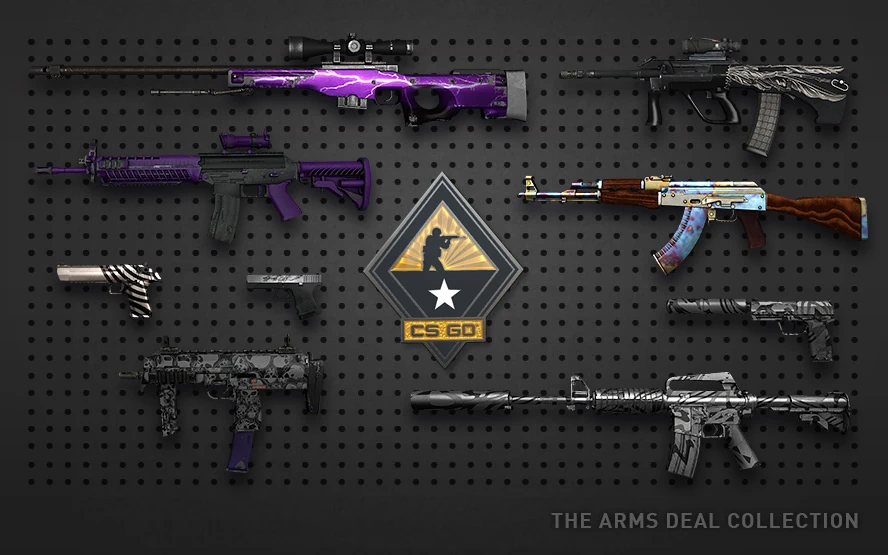
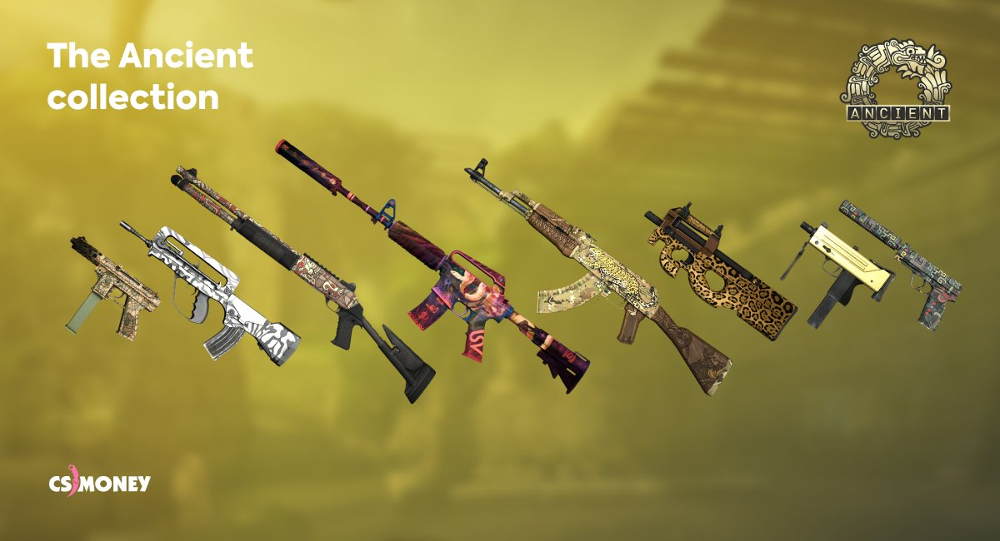

Popular CS:GO Skin Collections

CS:GO features various skin collections, each with its unique theme and style. From military-inspired designs to vibrant, colorful patterns, there's something for every player's taste.

The Ancient Collection, introduced with Operation Broken Fang, features designs inspired by ancient civilizations. The coveted AWP Fade is the crown jewel of this collection.